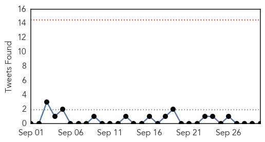
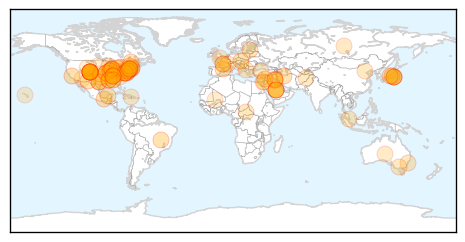
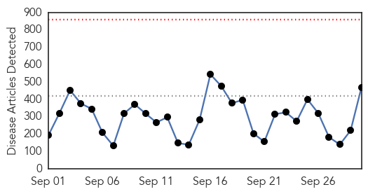
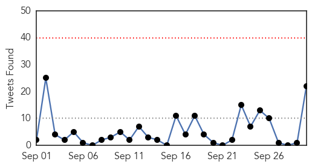

Unknown
30-Day Web Trend
0 alerts, 0 warnings
30-Day Twitter Trend
0 alerts, 0 warnings

Article Locations
Article Confidences

Top Articles:
- 0.999
- Delmarva takes preemptive action against Enterovirus 68
- 0.998
- 2 more cases of enterovirus confirmed in Passaic, Essex counties
- 0.998
- Hudson County healthcare workers carefully watching for Enterovirus D68
- 0.996
- Additional cases of EV-D68 in Connecticut
- 0.994
- CDC Confirms Additional Cases of EV-D68 in Connecticut
- 0.992
- Polio-like illness causing mystery paralysis in Colorado kids
- 0.991
- Enterovirus D68 infection causes partial paralysis for Washtenaw County child
- 0.991
- Kids’ Respiratory Virus in 40 States May Be Linked to Muscle Weakness
- 0.990
- Enterovirus 68 claims 277 confirmed cases in 40 states
- 0.989
- Children-paralyzing virus spreads across 40 states — RT USA
- 0.984
- Austria confirms first MERS virus case
- 0.983
- Enterovirus D68 may cause muscular paralysis in children with respiratory illness, doctors warn
- 0.980
- Enterovirus D-68 confirmed in two more N.J. children, according to state health department
- 0.977
- Austria reports first MERS case in Saudi national
- 0.969
- Austria Reports First MERS Case
- 0.967
- Respiratory Syncytial Virus Deadlier to Children than Enterovirus D-68: Reports
- 0.966
- At least 10 cases of enterovirus 68 confirmed in Conn.
- 0.965
- Austria reports first MERS case in Saudi national
- 0.965
- Children-Paralyzing Virus Spreads Across 40 U.S. States : Society : Chinatopix
- 0.964
- Colorado Children Experiencing Paralysis Symptoms
- 0.963
- How often does enterovirus D68 cause paralysis?
- 0.958
- How Often Does Enterovirus D68 Cause Paralysis?
- 0.948
- The move to ‘active surveillance’ in the fight against Lyme disease - Toronto
- 0.941
- Missouri officials investigate human rabies death
- 0.936
- BREAKING: Enterovirus case confirmed in Forrest County
- 0.936
- Respiratory Disease Pandemic: California Hit With First 2014 Wave of Enterovirus D68
- 0.917
- More babies return with negative tuberculosis results, El Paso health officials say
- 0.917
- Chicago Tribune
- 0.917
- Chicago Tribune
- 0.917
- Chicago Tribune
- 0.917
- Chicago Tribune
- 0.917
- Chicago Tribune
- 0.917
- Chicago Tribune
- 0.917
- Chicago Tribune
- 0.917
- Chicago Tribune
- 0.917
- Chicago Tribune
- 0.917
- Chicago Tribune
- 0.917
- Chicago Tribune
- 0.917
- Chicago Tribune
- 0.917
- Chicago Tribune
- 0.907
- Farsnews
- 0.891
- CDC investigates link between enterovirus and paralysis in children
- 0.887
- Long Beach Doctor Treats LA County’s First Case Of Enterovirus « CBS Los Angeles
- 0.871
- Baltic News Network - News from Latvia, Lithuania, Estonia
- 0.866
- Mexico says Ghanaian patient shows no signs of Ebola virus
- 0.866
- Mexico accuses 3 soldiers of murdering gang suspects-Attorney Gen
- 0.866
- U.S. considering experimental drugs for Texas Ebola patient -CDC
- 0.866
- Obama has been briefed about Ebola case in Dallas -White House
- 0.866
- Iran does not see ground offensive in Syria by U.S., allies
- 0.866
- British jets launch their first attacks against Islamic State
Showing top 50 articles...
Top Tweets:
- 0.736
- uno en un millón (:
- 0.654
- Don't let the flu catch you by surprise. Plan to get your annual flu vaccine early: http://t.co/USE0r5kavk
Ebola
30-Day Web Trend
0 alerts, 0 warnings

30-Day Twitter Trend
0 alerts, 0 warnings

Article Locations

Article Confidences

Top Articles:
- 1.000
- Nigeria’s Ebola outbreak may be coming to an end
- 1.000
- First U.S. case of Ebola diagnosed in Texas after man who came from Liberia falls ill
- 1.000
- What we know about the first Ebola patient diagnosed in the US
- 1.000
- Ebola is in the US. Here's how health officials will try to contain it.
- 1.000
- B.C. officials reassure residents about Ebola after first U.S. case
- 1.000
- B.C. officials reassure residents about Ebola after first U.S. case
- 1.000
- Dallas hospital diagnoses first patient with Ebola
- 1.000
- Traveler from Liberia is first Ebola patient diagnosed in U.S.
- 1.000
- CHRONOLOGY-Worst Ebola outbreak on record tests global response
- 1.000
- Traveller from Liberia is first Ebola patient diagnosed in U.S. - World
- 1.000
- Ebola case diagnosed in US
- 1.000
- Ebola case diagnosed in US
- 1.000
- First Ebola Case Diagnosed in the U.S.
- 1.000
- UPDATE 4-Traveler from Liberia is first Ebola patient diagnosed in U.S.
- 1.000
- Ebola In America: CDC Confirms First-Ever Case In United States
- 1.000
- Health Official Says Family Members of US Ebola Patient Were Likely Exposed
- 1.000
- Ebola man lived in US for a week
- 1.000
- Catholic Aid Vital to Solving Ebola Crisis
- 1.000
- First Ebola Case Confirmed in Dallas; DFR Crew Quarantined
- 1.000
- NationalJournal
- 1.000
- First U.S. case of Ebola surfaces in Dallas
- 1.000
- CDC confirms first case of Ebola in the United States
- 1.000
- First U.S. Ebola confirmed in Dallas patient
- 1.000
- Dallas hospital treating Ebola patient
- 1.000
- Dallas hospital treating Ebola patient
- 1.000
- US confirms first Ebola case - World News
- 1.000
- CDC and Texas Health Department Confirm First Ebola Case Diagnosed in the US
- 1.000
- Federal health officials confirm first Ebola case diagnosed in the U.S.
- 1.000
- First case of deadly Ebola diagnosed in United States
- 1.000
- Dallas hospital diagnoses first patient with Ebola
- 1.000
- Officials confirm first Ebola case diagnosed in US
- 1.000
- US confirms first case of Ebola - Emirates 24
- 1.000
- Ebola is in America: Liberian national Thomas Eric Duncan is diagnosed with disease in Dallas, Texas
- 1.000
- Government confirms first case of Ebola in U.S.
- 1.000
- Ebola in North America: Why you shouldn't panic
- 1.000
- Health officials confirm first Ebola case diagnosed in U.S.
- 1.000
- Ebola outbreak in Nigeria and Senegal may be over
- 1.000
- CDC Confirms First Case of Ebola in US as Patient Is Diagnosed With Deadly Virus in Texas Hospital
- 1.000
- Ebola in the U.S.: What you need to know now
- 1.000
- First Ebola case diagnosed in the US
- 1.000
- Ebola confirmed in Dallas patient
- 1.000
- Ebola outbreaks in Nigeria, Senegal, appear contained: CDC reports
- 1.000
- CDC says patient being treated at Dallas hospital has Ebola, first U.S. diagnosed case
- 1.000
- Ebola outbreaks in Nigeria, Senegal, appear contained: CDC reports
- 1.000
- Dallas hospital confirms 1st Ebola case in U.S.
- 1.000
- Dallas hospital confirms first Ebola case in US
- 1.000
- Ebola outbreaks in Nigeria, Senegal, appear contained: CDC reports
- 1.000
- Traveller from Liberia is first Ebola patient diagnosed in U.S.
- 1.000
- Ebola outbreak: 'Thousands of children orphaned'
- 1.000
- TAKE A LOOK- The Ebola outbreak
Showing top 50 articles...
Top Tweets:
- 0.952
- CDC: First diagnosed case of Ebola in the U.S. | Ebola Warning http://t.co/VaXXillGoT
- 0.949
- US patient did not exhibit symptoms of Ebola during flights from W. Africa; Ebola only contagious if the person is experiencing symptoms.
- 0.946
- $401,138 in funds to Sierra Leone, Liberia & Cote D’Ivoire UMC conferences for Ebola prevention & education UMC Ebola
- 0.942
- RT: Latest map on Ebola outbreak in West Africa w/ stats for Liberia, Guinea, Sierra Leone & Nigeria http://t.co/UwHCDpTFoA Ebol…
- 0.939
- RT: US patient did not exhibit symptoms of Ebola during flights from W. Africa; Ebola only contagious if the person is experiencin…
- 0.923
- .@AmeshAA: Ebola really isn't that contagious. It doesn't transmit like the flu.
- 0.836
- West Africa Ebola numbers as of September 29, 2014. endebolanow ebola westafrica http://t.co/hUqh6l89ms
- 0.836
- ICYMI: We recently held a Congressional Seminar on the Ebola Outbreak in West Africa. Watch here: http://t.co/jXs1zgO5TB
- 0.820
- A patient at a Dallas hospital is the first case of Ebola virus diagnosed in the U.S., the CDC says. http://t.co/GDZyDudrFO
- 0.774
- RT: Local public health officials in TX have begun identifying close contacts of Ebola patient for further monitoring. http:…
- 0.774
- RT: Local public health officials in TX have begun identifying close contacts of Ebola patient for further monitoring. http:…
- 0.743
- UN MIssion for Ebola Emergency Response (@UNMEER) HQ will be in Accra, Ghana & have operational presences in Guinea, Liberia, Sierra Leone
- 0.726
- Local public health officials in TX have begun identifying close contacts of Ebola patient for further monitoring. http://t.co/LDw6XPQtUO
- 0.714
- US has a strong health care system & dedicated public health professionals to ensure TX Ebola case can be limited. http://t.co/LDw6XPQtUO
- 0.709
- Ebola not just a health crisis, but also an information crisis in West Africa as distrust hampers outreach efforts. http://t.co/tp186mCEJk
- 0.698
- W. African nations need to take rapid steps to prepare for possible cases of Ebola http://t.co/tbwRaWBb1P
- 0.673
- RT: Nigeria’s extensive response to a single case of Ebola shows control is possible with rapid, focused interventions http:…
- 0.663
- CDC: First diagnosed case of Ebola in the U.S. Follow for updates http://t.co/TNPTMRYTGp
- 0.631
- CDC & @TexasDSHS confirm 1st Ebola case diagnosed in US. Hospitalized patient recently returned from W. Africa.
- 0.617
- RT: In pics: See how the UK is responding to the Ebola outbreak in West Africa http://t.co/AHVlaUe59o EndEbola http://t.co/ffOn…
- 0.617
- RT: .@TexasDSHS state publichealth lab first diagnosed Ebola in Dallas patient, @CDCgov confirmed it. The lab system works!
- 0.611
- RT: First case of Ebola diagnosed on US soil confirmed by medical officials in Dallas, Texas http://t.co/zamk6v7fvi
- 0.610
- RT: Nigeria Ebola outbreak not quite over but great response. Strong emergency ops, polio eradication experience key http:/…
- 0.593
- Nigeria’s extensive response to a single case of Ebola shows control is possible with rapid, focused interventions http://t.co/tbwRaWBb1P
- 0.585
- RT: CDC & @TexasDSHS confirm 1st Ebola case diagnosed in US. Hospitalized patient recently returned from W. Africa.
- 0.585
- RT: CDC & @TexasDSHS confirm 1st Ebola case diagnosed in US. Hospitalized patient recently returned from W. Africa.
- 0.569
- CDC doesn't recommend people on same commercial airline flights w/US Ebola patient undergo monitoring. http://t.co/wjPNZ4ROTZ
- 0.565
- RT: New report provides updated data on the Ebola outbreak in West Africa. http://t.co/w1kXJQMnko http://t.co/5N9ruMYTwq
- 0.565
- RT: New report provides updated data on the Ebola outbreak in West Africa. http://t.co/w1kXJQMnko http://t.co/5N9ruMYTwq
- 0.565
- RT: New report provides updated data on the Ebola outbreak in West Africa. http://t.co/w1kXJQMnko http://t.co/5N9ruMYTwq
- 0.545
- RT: Remember you are not likely to catch Ebola just by being in proximity to someone who has the virus; it is not airborne, …
- 0.531
- RT: The C.D.C. has confirmed first ebola case diagnosed in the United States.
- 0.531
- First Imported Case of Ebola Diagnosed in the United States: http://t.co/j78jghsWv1
- 0.526
- Nigeria Ebola outbreak not quite over but great response. Strong emergency ops, polio eradication experience key http://t.co/tbwRaWBb1P
- 0.521
- RT: According to Texas Ebola case symptomatic for 4 days before admission to hospital-how many contact…
- 0.516
- RT: CDC doesn't recommend people on same commercial airline flights w/US Ebola patient undergo monitoring. http://t.co/wjPNZ4ROTZ
- 0.515
- .@CDCMMWR reports on successful response to 1st confirmed case of Ebola in Senegal. http://t.co/zAgWFUTRtS
- 0.512
- Nearby countries anticipate imported Ebola cases & define success as containment not exclusion of imported cases. http://t.co/dcP8pb7DFY